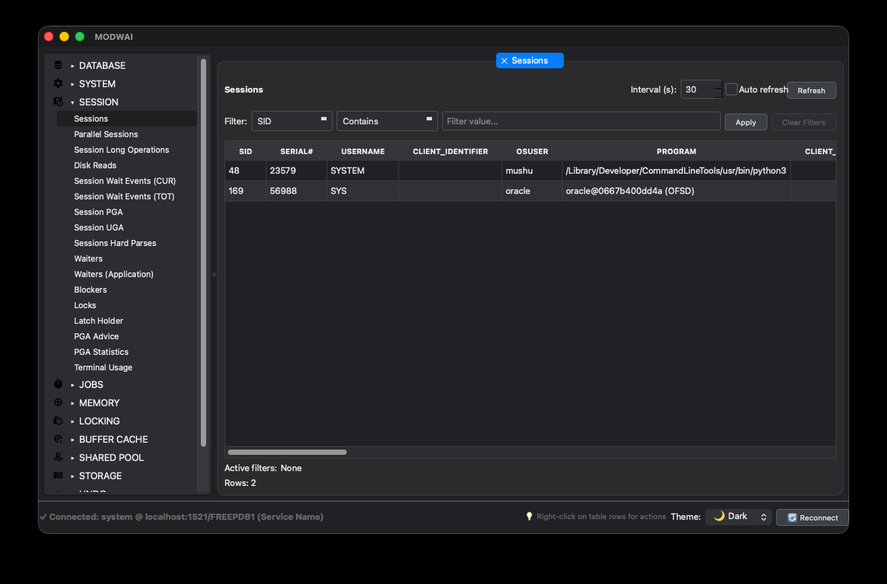

AI-Powered Analysis
One-click AI analysis of execution plans with concrete optimization recommendations. 10+ detection algorithms catch common Oracle performance anti-patterns automatically.
Connect to your Oracle database in 30 seconds. Get real-time monitoring, AI-powered execution plan analysis, and actionable optimization recommendations — all from a single desktop app. Choose local AI via Ollama when you need analysis to stay on your machine.
A comprehensive toolkit for database professionals — from real-time dashboards to AI-powered analysis.
One-click AI analysis of execution plans with concrete optimization recommendations. 10+ detection algorithms catch common Oracle performance anti-patterns automatically.
AI analysis can run locally via Ollama to minimize data exposure. Credentials are stored encrypted, and MODWAI does not collect telemetry.
Comprehensive monitoring SQL library covering sessions, locks, storage, memory, jobs, and system performance. No need to write monitoring queries from scratch.
Native desktop app for macOS, Windows. Same experience everywhere. Supports Oracle Database 19c and higher, including RAC and Pluggable Databases.
Visual health monitoring with interactive charts — CPU, memory (SGA/PGA), I/O, session trends, and wait event distribution with configurable auto-refresh.
Filter any query result like a spreadsheet — dropdown filters, multi-select checkboxes, search, and combine multiple column filters simultaneously.
MODWAI surfaces the metrics that matter — from active sessions and locks to color-coded execution plans — and layers in AI-driven recommendations so your team can tune databases before issues escalate.


Deep-dive into the features that make MODWAI the most comprehensive Oracle monitoring tool.
Press one button and get a summary of what the query does, issues identified (full table scans, cartesian joins, memory problems), and top 3 actionable recommendations with expected performance impact.
Like a flight recorder for your Oracle database. Samples active sessions at configurable intervals (0.5–10s) and builds a complete picture of activity.
Visual overview of database health at a glance with interactive line, donut, and bar charts. Configurable auto-refresh intervals with historical data tracking.
Automated database configuration analysis with AI-powered remediation recommendations. Get CRITICAL / WARNING / OK status indicators for common issues.
Full ASH/AWR analysis interface with 7 dedicated tabs for environments with Oracle Diagnostic Pack license. Deep historical performance analysis up to 8 days.
For environments without Diagnostic Pack, MODWAI provides Statspack-based performance analysis — an alternative to AWR that works on all Oracle editions including Standard Edition.
Right-click context menu: Kill Session, View Details, Show Current/Previous SQL, Session Waits, All Cursors, AI Analysis.
Browse tables, views, sequences, procedures. View columns, constraints, indexes, DDL generation, and object statistics.
Syntax highlighting, auto-formatting, query history, execute from cursor (Ctrl+Enter), multiple result view modes.
Drop .sql files into ~/.modwai/custom_queries/ — automatic detection with full feature support: export, AI analysis, filtering.
Get the latest version for your operating system and start monitoring your Oracle databases.
Compatible with macOS 10.15 or later
Download for Mac.dmg installer • Apple Silicon & Intel
Compatible with Windows 10 or later
Download for Windows.exe installer • 64-bit
Flexible monthly billing - cancel anytime. Pick a plan that fits your requirements.
For teams that want the full monitoring toolkit and prefer to use their own AI provider.
Need onboarding help? Talk to us.
For individual DBAs and small teams that want built-in AI without managing external API keys.
For production teams that need higher AI capacity, advanced analysis, and more control over the workflow.
Custom procurement? Contact sales.
*Session Recording works on all Oracle editions and does not require Diagnostic Pack. ASH/AWR analysis depends on Oracle Diagnostic Pack licensing.
Paddle handles secure billing as Merchant of Record. Taxes are calculated automatically at checkout.
Built for secure Oracle workflows with encrypted credential storage, local AI options via Ollama, and no telemetry collection.
Fernet symmetric encryption for all stored credentials
Challenge-response auth — no API keys stored in plain text
Short-lived 1-hour session tokens for API communication
Protection against API abuse — 10 requests/min per device
Zero cloud data exposure when using Ollama for analysis
Zero usage tracking or data collection — ever
Local AI via Ollama runs on your machine. If you use MODWAI Proxy, only execution plan metadata is sent, not raw database contents.
MODWAI supports both Thin mode (no Oracle Client needed) and Thick mode (uses Oracle Instant Client for advanced features like TNS aliases).
Yes. MODWAI supports OpenAI (GPT-4), Anthropic (Claude), DeepSeek, and Google Gemini with your own keys — unlimited usage, you pay per token directly to the provider.
Oracle Database 19c and higher, including RAC clusters and Pluggable Databases.
Have questions about integrations, data residency, or enterprise agreements? Send us a note and the MODWAI team will respond within one business day.